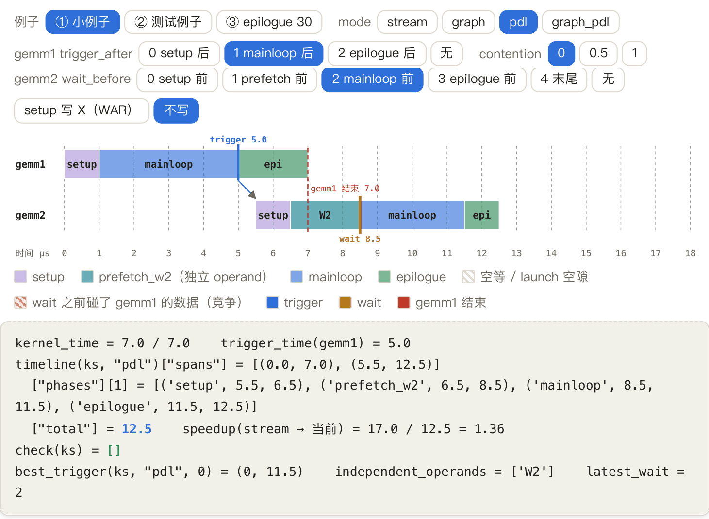
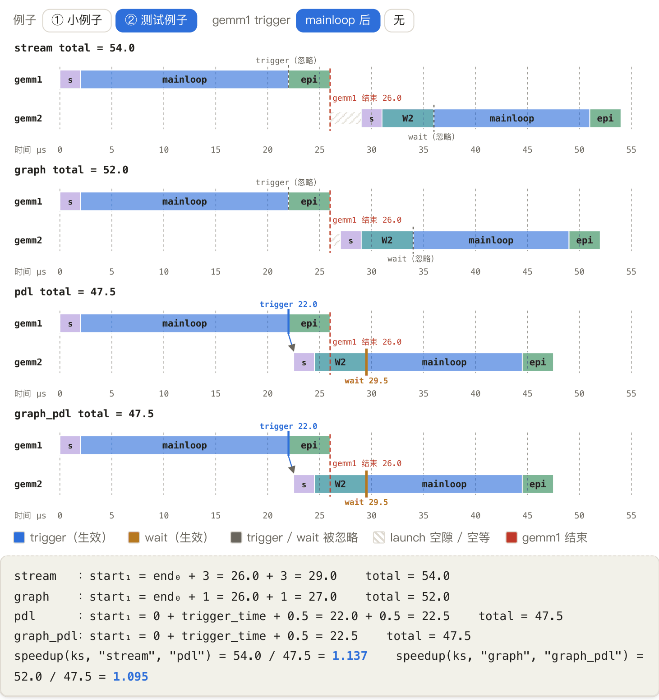
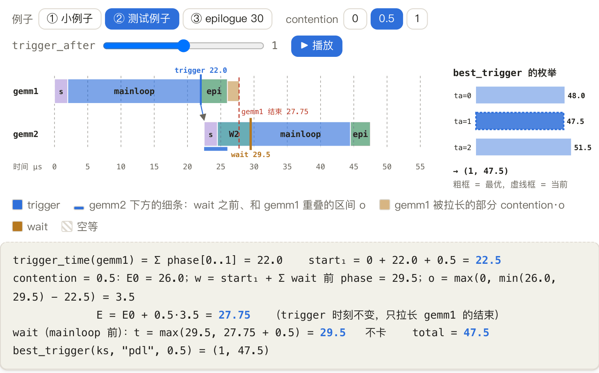
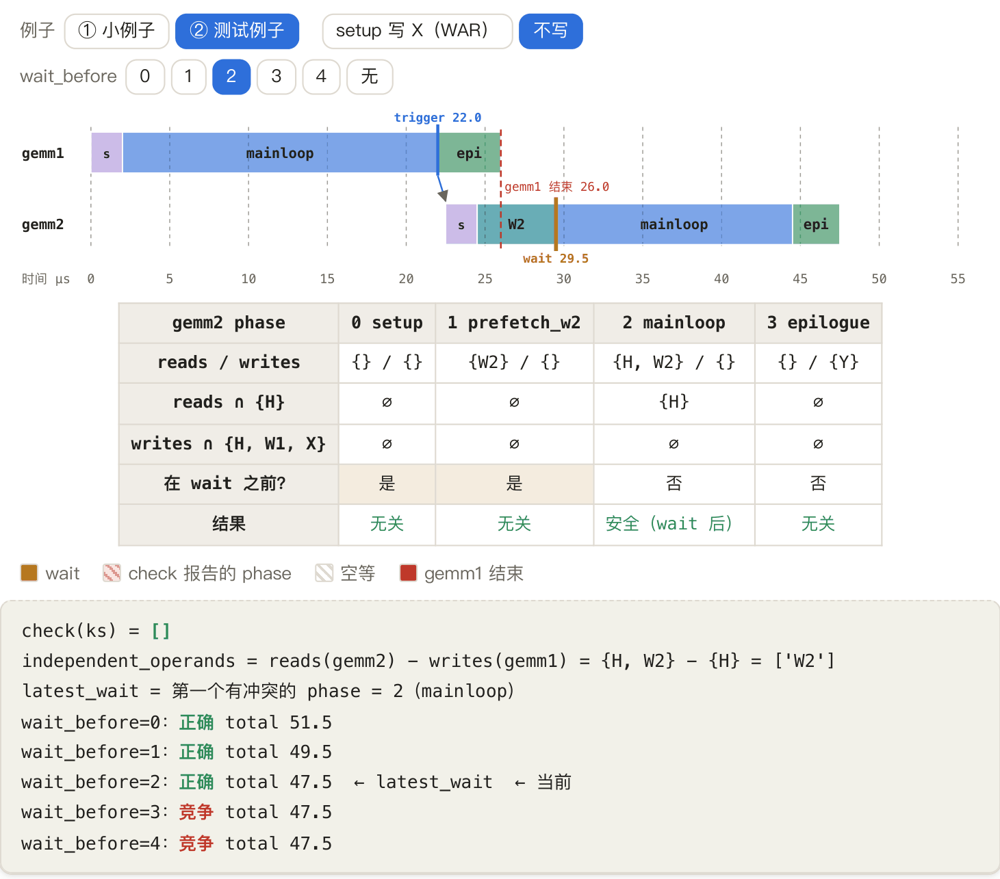
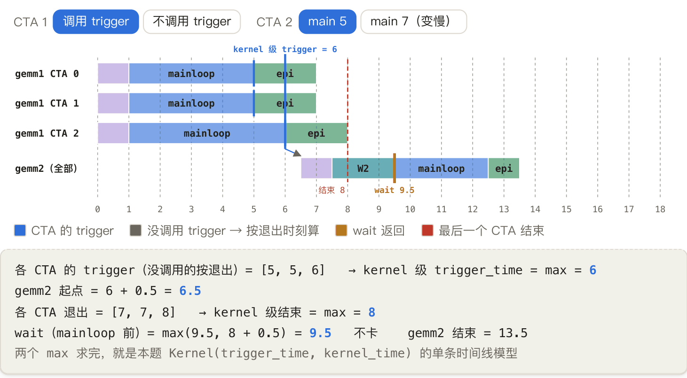

D4 · PDL：两个串联 GEMM 的提前启动、等待位置与正确性检查
两个串联的 GEMM（H = X·W1，Y = H·W2）之间有一段只因为“前一个 kernel 还没结束”而空着的时间。PDL 让第二个 kernel 提前启动、先做和 H 无关的事，读 H 之前再等。本题把这条时间线算出来，并写一个检查器：trigger 放哪只影响快慢，wait 放哪决定对错。
文件: mine/d4_pdl_chain.py 你的代码 · tests/test_d4_pdl_chain.py 测试 · solutions/d4_pdl_chain.py 参考解
题面速览
- 背景知识：先读 时间维度 里的 PDL 一节。
- 在体系里的位置：CUTLASS 把 PDL 的两条 device 端指令包成 launch_dependent_grids / wait_on_dependent_grids。Hopper 的 warp-specialized kernel 在 producer warp 发第一个 TMA 之前调用 wait（cooperative kernel 的 mainloop producer），在最后一个 tile 算完之后调用 launch（同一文件）。主机端用
cudaLaunchAttributeProgrammaticStreamSerialization发射（dependent_kernel_launch.md）。 - 你要实现：
kernel_time、trigger_time、timeline、best_trigger、check、independent_operands、latest_wait、speedup。Phase、Kernel、四个时间常量和例子构造函数two_gemm_chain已经给出。 - 关键规则：
- 普通 stream / graph：后继 kernel 在前驱结束之后加一段固定空隙才开始；trigger 和 wait 都不起作用。
- PDL：后继在前驱的 trigger 之后
PDL_LAUNCH_US开始；前驱没有 trigger 时退化成普通串行。 griddepcontrol.wait返回的时刻是前驱完全结束 + FLUSH_US，而不是前驱 trigger 的时刻。- 正确性只看 wait：wait 之前不能读前驱写的 buffer，也不能写前驱读写的 buffer。trigger 放哪都不改变
check的结果。 - 提前启动的后继会和前驱抢 SM：
contention让前驱的结束时间按重叠时长变长，所以 trigger 不是越早越好。
验收要点：kernel 与 trigger 时长 · stream / graph 的空隙 · stream 忽略 trigger 和 wait · PDL 的起点 22.5 与 wait 不卡（总时间 47.5）· wait 放在 W2 预取之前会卡到 26.5（49.5）· wait 等前驱结束而不是 trigger · 没有 trigger 时退化 · wait 在所有 phase 之后 · contention 让最优 trigger 从 0 变成 1 · 没有 PDL 时 contention 不起作用 · read-before-wait · write-before-wait（WAR）· 三个 kernel 的链只检查相邻对 · trigger 位置不改变检查结果 · independent_operands = ['W2']、latest_wait = 2 · speedup · 未知 mode 报错。
- PDL（Programmatic Dependent Launch）：Hopper（sm90）起的 CUDA 特性。同一个 stream 里的后继 kernel 可以在前驱结束前启动。
- trigger：前驱调用
griddepcontrol.launch_dependents（CUDA runtime 里是cudaTriggerProgrammaticLaunchCompletion()），表示“后继可以开始了”。它只是性能提示，不提供可见性。 - wait：后继调用
griddepcontrol.wait（cudaGridDependencySynchronize()），阻塞到前驱全部结束、写回的内存对它可见。 - 独立 operand：后继读、但前驱不写的数据，例如第二个 GEMM 的权重 W2。它可以在 wait 之前加载。
- WAR（write-after-read）：后继写了前驱还要读的 buffer。前驱还在跑，提前写会破坏它的输入。
直觉与类比
第一棒（gemm1）跑到交接区入口时喊一声“我到了”（trigger），第二棒（gemm2）听到就开始起跑加速（setup、预取 W2）。但接力棒（H）必须真正交到手上才能继续跑（wait）：起跑早不等于可以不接棒就跑。喊得太早，第二棒会在跑道上挡住第一棒（contention）；喊得太晚，交接区里就是空等。没有 PDL 的普通 stream 相当于第二棒站在原地，等第一棒完全停下来、再等裁判吹哨（3 µs 的 launch 空隙）才起跑。
PDL 的价值在哪一层体现
单独测一个 GEMM，PDL 几乎看不出收益：它节省的是两个 kernel 之间的空隙（launch 延迟、prologue、和前驱无关的预取），只有在一串依赖的 kernel 里才有意义。所以它真正发挥作用的地方在系统层：
- CUDA Graph / stream 里的一串小 kernel：LLM decode 阶段每层是一串小 GEMM 和逐元素 kernel，每个只跑几微秒，launch 和 setup 的固定开销占比很高。graph 只能把空隙从 ~3 µs 压到 ~1 µs，PDL 能把下一个 kernel 的 setup 和权重预取藏进上一个的尾巴里。
- 编译器 / 框架负责插 trigger 和 wait：哪个 kernel 读哪个 buffer、wait 最晚能放到哪里（本题的
latest_wait）、trigger 该放多早（best_trigger）都是跨 kernel 的信息，单个 kernel 的作者看不全。CUTLASS 把指令包好，但“这一对 kernel 之间能不能用、用在哪”通常由图级调度（CUDA Graph 的 programmatic edge、推理框架的 kernel 编排）决定。 - autotune 要按端到端时间做：CUTLASS example 63 的 README 也提醒，大部分收益要在端到端应用里看，
overlap_ratio和prefetch_ratio应该按整条链的时间调。本题的best_trigger是这个搜索的最小模型。
图解：四种 mode 的时间关系
从小例子开始：先在草稿纸上手算
先别管 26 µs、25 µs 这些数字。拿一个每段时长都是 1、2、4 这种小整数的例子手算一遍：两条时间线、七个 phase，每个起止时刻都能写在纸上。规则清楚以后放大到测试的运行例子，再看两个边界情况，最后写成一般公式。你自己推这道题时，草稿纸上画的就是下面这种“两行时间轴”。
① 小：gemm1 = 1+4+2，gemm2 = 1+2+3+1 每个 phase 只有 1–4 µs，七个起止时刻都能手算。
trigger @5 → gemm2 从 5.5 开始
wait 返回 max(8.5, 7.5) = 8.5
stream 17 · pdl 12.5 · ×1.36
② 测试例子：gemm1 = 2+20+4，gemm2 = 2+5+15+3 two_gemm_chain() ，结构和 ① 一模一样，只是数字变大。
trigger @22 → gemm2 从 22.5 开始
wait 返回 max(29.5, 26.5) = 29.5
stream 54 · graph 52 · pdl 47.5
③ 边界：epilogue 拉长到 30 / contention
wait 等的是“前驱结束”，不是 trigger；提前启动有代价。
epi 30：wait 返回 52 + 0.5 = 52.5
c=0.5：best (0,44.5) → (1,47.5)
无 wait：报 mainloop reads H
④ 一般
把 ①–③ 里反复出现的模式写成公式。
start₁ = start₀ + t_trig + 0.5
（无 trigger：end₀ + gap）
wait 返回 = E + 0.5（E 含 c·o）
正确 ⇔ wait 前不读 p.W
且不写 p.R ∪ p.W
✎ 草稿纸：小例子（常量 STREAM_GAP 3 · GRAPH_GAP 1 · PDL_LAUNCH 0.5 · FLUSH 0.5）
gemm1：setup 1 → mainloop 4（读 X, W1）→ epilogue 2（写 H） trigger_after = 1
gemm2：setup 1 → prefetch_w2 2（读 W2）→ mainloop 3（读 H, W2）→ epilogue 1（写 Y）
wait_before = 2
1) kernel_time(gemm1) = 1+4+2 = 7 kernel_time(gemm2) = 1+2+3+1 = 7
trigger_time(gemm1) = phase 0..1 之和 = 1+4 = 5 trigger_time(gemm2) = 7（没有 trigger → 等于 kernel_time）
2) stream ：gemm2.start = end₀ + 3 = 7+3 = 10 spans = [(0, 7), (10, 17)] total = 17.0
graph ：gemm2.start = end₀ + 1 = 7+1 = 8 spans = [(0, 7), (8, 15)] total = 15.0
（这两种 mode 完全不看 trigger_after / wait_before）
3) pdl ：gemm2.start = start₀ + trigger_time + 0.5 = 0+5+0.5 = 5.5
0 时刻 ──────────── 5 trigger ── 7 gemm1 结束 ── 7.5 wait 可返回
gemm2 setup 5.5 → 6.5
prefetch_w2 6.5 → 8.5 ← 读 W2，和 gemm1 无关，可以在 wait 之前做
[wait] t = max(8.5, end₀ + 0.5) = max(8.5, 7.5) = 8.5 没有空等
mainloop 8.5 → 11.5 ← 读 H，必须在 wait 之后
epilogue 11.5 → 12.5 total = 12.5
graph_pdl：同样 12.5（有 trigger 时 gap 不出现） speedup(stream→pdl) = 17/12.5 = 1.36
4) wait 放得更早：
wait_before = 1：prefetch 起点 max(6.5, 7.5) = 7.5 空等 1 → … total = 13.5
wait_before = 0：setup 起点 max(5.5, 7.5) = 7.5 空等 2 → … total = 14.5
5) check：gemm1.writes = {H} gemm1.reads ∪ writes = {X, W1, H}
wait_before = 2：wait 之前是 setup{}、prefetch{读 W2} W2 ∉ {H} → []
wait_before = 3 / 4 / None：mainloop 读 H 在 wait 之前 H ∈ {H} → ['read-before- wait: gemm2.mainloop reads H']
⚠ wait_before = 3 时 mainloop 实际从 8.5 开始，比 gemm1 结束（7）还晚——这次“碰巧”读对了，
但硬件不保证 gemm1 的写入已可见，所以 check 照样报错：check 只看“在不在 wait 之前”，不看时刻。
6) independent_operands = gemm2.reads − gemm1.writes = {W2, H} − {H} = ['W2']
latest_wait = 第一个碰 gemm1 数据的 phase = mainloop 的序号 = 2
7) best_trigger（枚举 gemm1 的 trigger_after = 0, 1, 2）
ta=0：start 1+0.5 = 1.5；setup 1.5–2.5，prefetch 2.5–4.5，wait max(4.5, 7.5) = 7.5， mainloop 7.5–10.5，epi → 11.5
ta=1：12.5（见 3）
ta=2：trigger @7 → start 7.5，后面不再等 → 7.5+7 = 14.5
contention = 0 → (0, 11.5)
contention = 0.5：
ta=0：wait 前的名义区间 [1.5, 1.5+1+2) = [1.5, 4.5)，o = min(7, 4.5) − 1.5 = 3
gemm1 结束 E = 7 + 0.5·3 = 8.5，wait 返回 9.0 → mainloop 9–12，epi 12–13 → 13.0
ta=1：区间 [5.5, 8.5)，o = min(7, 8.5) − 5.5 = 1.5，E = 7.75，wait 8.25 < 8.5 不卡 → 12.5
ta=2：o = max(0, min(7, 10.5) − 7.5) = 0 → 14.5
→ (1, 12.5) 最早的 trigger 不再最优
下面这张图把上面的草稿纸画成两行时间轴，所有参数都可以改。上面一行是 gemm1，下面一行是 gemm2；蓝色竖线是 trigger，橙色竖线是 wait，红色虚线是 gemm1 真正结束的时刻。红色斜线的 phase 是 check 会报告的竞争：它在 wait 之前碰了 gemm1 的数据。先用默认的“小例子”对照草稿纸，再把 wait 拖到“无”、把 trigger 改成 0，看看红色 phase 落在 gemm1 结束线左边（真的读到了没写完的 H）还是右边（碰巧没出错，但仍然是竞争）。

图解详解：时间线、trigger、wait 与竞争检查
这些图是交互版讲解页的静态快照，显示的是默认参数下的状态。文中提到的按钮、滑块和悬停提示在这里不能操作；图上的数字和下方的文字、表格、黑底面板说的是同一组值，可以直接对照你的函数输出。
前面的流程图只给了因果结构。这一节把整道题拆成四张可交互的时间轴，每张对应一组要实现的函数。点按钮、拖滑块、把鼠标停在 phase 上，下方面板会把当前状态逐步代入公式。所有图都用同一套规则（和参考解逐行对应），默认状态的数字都和测试一致。
先看全局：timeline 的骨架就是下面这段伪代码，后面每张图只是在画其中一两行。
for i, k in enumerate(kernels):
# ① 起点（图 1、图 2）
if i == 0:
start = 0 # kernel 0 从 0 开始
elif pdl and prev.trigger_after is not None:
start = prev_start + trigger_time(prev) + 0.5 # PDL：前驱 trigger 之后 0.5
else:
start = prev_end + gap # stream 3 / graph 1，或前驱没有 t
# ② 提前启动的代价（图 2）
if pdl and contention:
prev_end += contention * overlap
# ③ 逐个 phase 推进，遇到 wait 就和“前驱结束 + flush”取 max（图 3）
t = start
for j, p in enumerate(k.phases):
if pdl and k.wait_before == j:
t = max(t, prev_end + 0.5)
phases.append((p.name, t, t + p.us))
t += p.us
if pdl and k.wait_before == len(k.phases):
t = max(t, prev_end + 0.5)
# ④ 正确性和上面的时刻无关：check 只看哪些 phase 落在 wait 之前、碰了什么 buffer（图 3）
图 1 · 四种 mode：timeline 的起点规则与 speedup
同一对 kernel 用四种 mode 各跑一遍，竖着排在一起比较。看三件事：
- stream 和 graph 的区别只有空隙（3 µs vs 1 µs），两个 kernel 从不重叠；gemm1 的 trigger 和 gemm2 的 wait 画成灰色虚线，表示“写了但被忽略”。
- pdl 和 graph_pdl 在有 trigger 时结果一样：起点由 trigger 决定，gap 根本不出现。把 trigger 切成“无”，它们就分别退化成 stream 和 graph（54 / 52）。
- gemm2 的 setup + prefetch 被“塞”到了 gemm1 的 epilogue 下面——这就是 PDL 省下的时间。

源码对照：PDL 只有在主机端用 cudaLaunchAttributeProgrammaticStreamSerialization 发射时才生效，否则就是本图的 stream 行；device 端两条指令在没定义 CUTLASS_ENABLE_GDC_FOR_SM90 时会被编译成空（CUTLASS_GDC_ENABLED 的条 件），这时 kernel 的行为也退化成串行。
图 2 · 拖动 trigger：trigger_time 、contention 与 best_trigger
拖动 gemm1 的 trigger_after ，gemm2 整条时间线会跟着左右平移：起点永远是 trigger 时刻 + 0.5 。但 gemm2 读 H 的 mainloop 还是被 wait 钉在 gemm1 结束 + 0.5 之后，所以 trigger 再早也只能多藏住“wait 之前的那几段”。
再把 contention 调到 0.5：gemm2 在 wait 之前跑的那段如果和 gemm1 重叠，gemm1 的结束会被推迟（橙色斜线），wait 也跟着推迟。右边的柱状图是 best_trigger 枚举的每个 trigger 位置的总时间，粗框是它返回的那个（并列时取更晚的）。

CUTLASS 里 trigger 的位置就是 example 63 的 overlap_ratio ，源码注释（launch_dependent_grids ）说得很直白：“too early can compete with current kernels, while launching too late can lead to a long latency”。图里 contention = 0 和 0.5 两种情况的最优位置不同，正是这句话。
图 3 · 挪动 wait：check 、independent_operands 、latest_wait
这张图只改 gemm2 的 wait_before 。上半部分是时间线，下半部分的表格把每个 phase 的读写集合和 gemm1 的集合逐个求交：
- 读冲突（RAW）：phase.reads ∩ gemm1.writes。gemm1 只写 H，所以只有 mainloop 有读冲突。
- 写冲突（WAR / WAW）：phase.writes ∩ (gemm1.reads ∪ gemm1.writes)。默认没有；打开“setup 写 X”就会出现测试里的 WAR。
- 只有落在 wait 之前（或者根本没有 wait）的冲突才报告。wait 往左挪：正确但会空等；往右挪过
latest_wait：立刻出现红色竞争，不管时刻上是不是“碰巧”晚于 gemm1 结束。

源码对照：wait_on_dependent_grids 的注释是“enforces no global memory access prior to this instruction”，asm volatile(... ::: "memory") 让编译器不能把访存挪到它前面。cooperative kernel 把 wait 放在 mainloop producer 发第 一个 TMA 之前——它在 wait 之前不读 A、B，相当于本题的 wait_before = 0 附近；example 63 把权重 A 的加载挪到 wait 前（不等 wait 的 A ），就是把 wait 往 latest_wait 推。
图 4 · 放大到 CTA：kernel 级的 trigger 和 wait 是怎么来的
本题把一个 kernel 当成一条时间线。真实的 grid 有很多 CTA，各自调用 launch_dependents 。规则（CUDA 编程指南和 PTX ISA 原文见下）是：
- 后继可以启动 ⇔ 前驱每一个 CTA 都已经发出 trigger 或者已经退出。所以 kernel 级的
trigger_time= 各 CTA trigger 时刻的最大值（没调用 trigger 的 CTA 按退出时刻算）。 - wait 返回 ⇔ 前驱所有 CTA 都结束、写入都刷出可见。所以 kernel 级的结束 = 各 CTA 结束时刻的最大值。
下面用 3 个 CTA 的 gemm1（main 时长 4、4、5）和小例子里的 gemm2 演示。打开“CTA 1 不调用 trigger”或“CTA 2 变慢”，看 kernel 级 trigger 怎样被最慢的那个 CTA 拖住。这一层抽象成两个最大值以后，就回到了本题的模型。

原文：CUDA 编程指南 Programmatic Dependent Launch and Synchronization（“The CUDA driver can launch the secondary kernel when all primary thread blocks have launched and executed cudaTriggerProgrammaticLaunchCompletion . If the primary kernel doesn’t execute the trigger, it implicitly occurs after all thread blocks in the primary kernel exit”）；PTX ISA griddepcontrol（launch_dependents 在“all other CTAs in the grid issue the same instruction or have completed”之后生效；wait 等到“all prerequisite grids in flight have completed and all the memory operations … are performed and made visible”）。注意“all primary thread blocks have launched”：如果 gemm1 的 CTA 多于一波，最后一波 CTA 没上 SM 之前 trigger 不会生效。
PTX ISA 还写了一句：trigger 之前如果有 gpu scope 的 release fence，它会和后继 grid 的开始同步。也就是说，“写 → fence → trigger”能让后继在开始时看到这部分写入。本题（和 CUTLASS 的 GEMM kernel）不依赖这一点：check 只认 wait，trigger 不提供任何可见性。
速查：全部时间与检查公式
| 函数 / 量 | 公式 | 小例子 | 测试例子 |
|---|---|---|---|
kernel_time( k) |
Σ phase.us | 7 / 7 | 26 / 25 |
trigger_time (k) |
Σ phase[0..trigger_after].us；None → kernel_time | 5 | 22 |
| start（stream/ graph） | end₀ + 3 / end₀ + 1 | 10 / 8 | 29 / 27 |
| start（pdl，有 trigger） | start₀ + trigger_time + 0.5；无 trigger 退化成上一行 | 5.5 | 22.5 |
| contention | w = start + Σ wait 前 phase；o = max(0, min(E0,w) − start)；E = E0 + c·o | ta=0, c=0.5：o=3, E=8.5 | ta=0, c=0.5：o=7, E=29.5 |
| wait 返回 | t = max(t, E + 0.5)，放在第 wait_before 个 phase 之前（= len 时放在最后） | max(8.5, 7.5) | max(29.5, 26.5) |
best_trigger |
枚举 trigger_after，取 total 最小；并列取更晚 | (0, 11.5) /c=0.5: (1, 12.5) | (0, 44.5) /c=0.5: (1, 47.5) |
check |
wait 之前的 phase：reads ∩ p.writes → read-…；writes ∩ (p.reads ∪ p.writes) → write-… | 无 wait：['read-before-wait:gemm2.mainloop reads H'] | |
independent_operands |
sorted(c.reads − p.writes) | ['W2'] | |
latest_wait |
第一个有冲突的 phase 序号；没有 → len(phases) | 2（mainloop） | |
speedup |
total(base) / total(opt) | 17/12.5 = 1.36 | 54/47.5 = 1.137 |
两句话记住这道题：trigger 决定后继什么时候开始，wait 决定后继什么时候能碰前驱的数据；前者只影响快慢，后者决定对错。
逐步演示
gemm1 = 2 + 20 + 4 = 26 µs，gemm2 = 2 + 5 + 15 + 3 = 25 µs。stream 模式下 gemm2 从 26 + 3 = 29 开始，spans [(0, 26), (29, 54)]，总时间 54。
graph 节点之间的空隙是 1 µs：gemm2 从 27 开始，总时间 52。graph 只缩短 launch 空隙，不让两个 kernel 重叠。
gemm1 在 mainloop 之后 trigger（22 µs），gemm2 从 22 + 0.5 = 22.5 开始：setup 22.5–24.5，prefetch_w2 24.5–29.5。wait 放在 mainloop 之前，返回时刻是 max(29.5, 26 + 0.5) = 29.5，没有卡住。mainloop 29.5–44.5，epilogue 到 47.5。speedup = 54 / 47.5 = 1.137。
two_gemm_chain(consumer_wait="prefetch_w2")：wait 在 W2 预取之前，prefetch 只能从 26.5 开始，总时间 49.5。这个位置是正确的，但把能藏在 gemm1 后面的 5 µs 预取浪费了。latest_wait 返回 2（mainloop），这是正确位置里最晚、也最快的。
没有 contention 时 best_trigger = (0, 44.5)：setup 之后就 trigger 最好。contention = 0.5 时，trigger_after = 0 让 gemm2 的 setup + prefetch（7 µs）和 gemm1 重叠，gemm1 被拉长到 26 + 0.5·7 = 29.5，总时间 48.0；trigger_after = 1 时 gemm2 从 22.5 开始，只和 gemm1 重叠 26 − 22.5 = 3.5 µs，gemm1 拉长到 27.75，wait 在 28.25 返回，仍早于 mainloop 的 29.5，总时间不变，最优变成 (1, 47.5)。这就是 CUTLASS 注释说的“太早会和当前 kernel 抢资源”。
去掉 wait（consumer_wait="none"），check 返回 ["read-before-wait: gemm2.mainloop reads H"]。如果 gemm2 的 setup 写了 X（gemm1 还在读），返回 ["write-before-wait: gemm2.setup writes X"]。改 trigger 的位置，这两条结果都不会变。
易错点
- wait 等到前驱的 trigger 就返回。 trigger 不提供可见性，wait 等的是前驱完全结束 + flush。测试
test_wait_waits_for_end_not_trigger把 epilogue 拉长到 30 µs，mainloop 必须从 52.5 开始。 - 前驱没有 trigger 时后继在前驱开始时启动。 没有 trigger 等价于“kernel 结束时隐式触发”，PDL 退化成串行加空隙。测试
test_no_trigger_falls_back_to_gap。 - stream 模式也用了 trigger。 只有 pdl / graph_pdl 读 trigger 和 wait。测试
test_timeline_modes。 - contention 拉长了前驱的 trigger。 只拉长前驱的结束，trigger 时刻不变（后继已经启动了）。测试
test_contention_only_stretches_the_producer_end检查 spans 是(0, 27.75)。 - 只检查读。 后继在 wait 之前写前驱的输入（WAR）同样是竞争。测试
test_write_hazard_before_wait。 - 用 trigger 的位置推断正确性。 测试
test_trigger_position_never_changes_correctness遍历所有组合。
对照文档
“PDL 不等于 kernel 内 pipeline。它解决的是两个有依赖关系的 kernel 之间的启动时机：允许 consumer kernel 在 producer kernel 完全结束之前就开始执行一部分与 producer 输出无关的工作。……Consumer 只能在同步前访问明确独立于 producer 的数据。不能因为 kernel 已经提前启动，就提前读取 producer 尚未完成写入的输出。”
文档里的“Producer 先完成必要写入 → 触发 programmatic completion → Consumer 先做不依赖 producer 的工作 → grid dependency synchronize → 再读取依赖 producer 的结果”五个框，在本题里分别是 trigger_after、PDL_LAUNCH_US、prefetch_w2、wait_before、mainloop。文档说“预取 W₂、准备地址”可以提前做，independent_operands 就是把这句话变成集合运算：consumer 的 reads 减去 producer 的 writes。
真实代码
两条指令和它们的注释（简化自 grid_dependency_control.h）：
// launch_dependents doesn't impact the functionality but the performance:
// Launching a dependent kernel too early can compete with current kernels,
// while launching too late can lead to a long latency.
void launch_dependent_grids() { asm volatile("griddepcontrol.launch_dependents;"); }
// enforces no global memory access prior to this instruction.
void wait_on_dependent_grids() { asm volatile("griddepcontrol.wait;" ::: "memory"); }
example 63 的 producer（简化自 sm90_mma_tma_gmma_ss_warpspecialized_with_prefetch.hpp）：加载激活（前驱的输出）的 warp 先 wait，加载权重的 warp 不等；trigger 在发出一定比例的 k-tile 之后：
cutlass::arch::wait_on_dependent_grids();
for (int cnt = 0; k_tile_count > 0; --k_tile_count, ++cnt) {
pipeline.producer_acquire(smem_pipe_write);
copy(tma_load_a ...); copy(tma_load_b ...);
if (!disable_gdc && cnt >= launch_dep_grids_threshold && !launch_dep_grids) { // overlap_ratio 决定阈值
launch_dep_grids = true;
cutlass::arch::launch_dependent_grids();
}
++smem_pipe_write;
}
| 文档 / 本题 | CUTLASS |
|---|---|
trigger_after |
overlap_ratio 决定的 launch_dep_grids_threshold |
wait_before |
producer warp 里 wait_on_dependent_grids() 的位置 |
independent_operands |
example 63 在 wait 之前预取的权重（prefetch_ratio） |
contention |
注释里的 “compete with current kernels” |
真实代码
简化自 grid_dependency_control.h ，两条指令和它们的注释：
// launch_dependents doesn't impact the functionality but the performance:
// Launching a dependent kernel too early can compete with current kernels,
// while launching too late can lead to a long latency.
void launch_dependent_grids() { asm volatile("griddepcontrol.launch_dependents;"); }
// enforces no global memory access prior to this instruction.
void wait_on_dependent_grids() { asm volatile("griddepcontrol.wait;" ::: "memory"); }
简化自 example 63 的 producer ：拆成两组 DMA warp 时，加载 B（激活，前驱的输出）的 warp 先 wait，加载 A（权重）的 warp 不等；trigger 在发出一定比例的 k-tile 之后：
cutlass::arch::wait_on_dependent_grids(); // "We have to wait on dependent grids b
for (int cnt = 0; k_tile_count > 0; --k_tile_count, ++cnt) {
pipeline.producer_acquire(smem_pipe_write);
copy(tma_load_a ..., EVICT_FIRST); copy(tma_load_b ..., EVICT_LAST);
if (cnt >= launch_dep_grids_threshold && !launch_dep_grids) { // overlap_ratio 决定这个
launch_dep_grids = true;
cutlass::arch::launch_dependent_grids();
}
++smem_pipe_write;
}
if (!launch_dep_grids) cutlass::arch::launch_dependent_grids(); // 至少在结尾触发一次
| 文档 / 本题 | CUTLASS |
|---|---|
trigger_after |
overlap_ratio （README ：默认 0.5，约一半 k-tile 之后） |
wait_before = latest_wait(...) |
读 B 之前的 wait_on_dependent_grids() |
independent_operands = ['W2'] |
不等 wait 就加载的 A（“we assume A (weights) are static”） |
contention |
launch_dependent_grids 注释里的 “compete with current kernels” |
mode="pdl" |
kernel_launch 设置 programmaticStreamSerializationAllowed = 1 |
注意 example 63 的权重是 A、激活是 B；本题按文档写成 Y = H·W2，权重在第二个位置。
上机验证
本机没有 Hopper GPU，PDL 的真实效果没法在这里测。有 sm90（或更新）的机器时可以这样对照：
# CUTLASS example 63：overlap_ratio 就是本题的 trigger 位置，-1 表示关闭 PDL 重叠
./63_hopper_gemm_with_weight_prefetch --m=8192 --n=1 --k=8192 --o=-1.0 --p=-1.0
./63_hopper_gemm_with_weight_prefetch --m=8192 --n=1 --k=8192 --o=0.5 --p=-1.0
./63_hopper_gemm_with_weight_prefetch --m=8192 --n=1 --k=8192 --o=0.8 --p=0.7
# 用 Nsight Systems 看两个 kernel 是否重叠：
nsys profile --cuda-graph-trace=node -o pdl ./your_two_gemm_app
RTX 5090（SM120）也支持 griddepcontrol，cuda-kernels-dev-drills 里有在 5090 上真机测 PDL 的练习。
三级提示
L1I/O 例子和关键问题方向（轻度剧透）
ks = two_gemm_chain()
kernel_time(ks[0]), trigger_time(ks[0]) # (26.0, 22.0)
timeline(ks, "stream")["spans"] # [(0.0, 26.0), (29.0, 54.0)]
timeline(ks, "pdl")["phases"][1]
# [('setup', 22.5, 24.5), ('prefetch_w2', 24.5, 29.5), ('mainloop', 29.5, 44.5), ('epilogue', 44.5, 47.5)]
best_trigger(ks, "pdl", 0.0), best_trigger(ks, "pdl", 0.5) # ((0, 44.5), (1, 47.5))
check(two_gemm_chain(consumer_wait="none")) # ['read-before-wait: gemm2.mainloop reads H']
independent_operands(*ks), latest_wait(*ks) # (['W2'], 2)
关键问题
- 后继 kernel 的起点由前驱的哪个时刻决定？wait 返回的时刻呢？
- 为什么 trigger 的位置不影响正确性，而 wait 的位置影响？
- contention 存在时，为什么最早的 trigger 不一定最好？
- wait 能不能放得比“第一个读 H 的 phase”更晚？更早会怎样？
L2思路拆解与常见坑拆解与常见坑（中度剧透）
timeline按 kernel 顺序走，维护“前驱的 start、trigger 时刻、实际结束时间”。kernel 0 从 0 开始。对 kernel i ≥ 1，先算起点（规则 1、2），然后逐个 phase 推进时间 t；到第wait_before个 phase 时t = max(t, prev_end + FLUSH_US)。wait_before == len(phases)时在循环之后对结束时间做同样的 max。- contention：先用“没有 wait 的名义时间”算出后继第一个等待 phase 的开始 w（没有 wait 时是后继跑完的时间），
o = max(0, min(E0, w) − start)，把前驱的结束改成E0 + contention·o，再用新的结束时间算 wait。别忘了更新 spans 里前驱那一项。 check：对每对相邻 kernel，求前驱的 reads ∪ writes 和 writes；遍历后继 wait 之前的 phase（没有 wait 时是全部），先报读冲突再报写冲突，buffer 名字排序。best_trigger：用dataclasses.replace改trigger_after，比较时用<=，这样并列时留下更晚的 trigger。
L3关键问题的答案几乎是答案（重度剧透）
答案
- 起点由前驱的 trigger 决定（trigger 时刻 +
PDL_LAUNCH_US），前驱没有 trigger 时由前驱结束决定；wait 返回的时刻永远由前驱结束决定（+ flush），和 trigger 无关。 - trigger 只是“可以开始调度后继”的提示，不带任何内存语义；wait 才是唯一的同步点，它保证前驱的所有写对后继可见。所以数据依赖只能由 wait 的位置保证。
- 后继提前启动后，它的 CTA 要占 SM、寄存器、SMEM 和带宽。如果前驱还有很多工作没做完，这些资源被抢走会拉长前驱，而前驱的结束又决定了 wait 返回的时刻：trigger 太早可能得不偿失。
- 不能更晚：
latest_wait就是第一个读 H 的 phase（mainloop），再往后挪，mainloop 就落在 wait 之前，check报read-before-wait: gemm2.mainloop reads H——哪怕时间上它碰巧晚于 gemm1 结束，也没有可见性保证。更早是正确的，但会让 W2 预取这类独立工作排到 wait 后面去空等，例子里从 47.5 变成 49.5（放在 setup 前则是 51.5）。所以latest_wait是正确位置里最晚、也最快的。
参考解
✓solutions/d4_pdl_chain.py先自己写完、跑过测试再看
"""D4 · PDL：两个串联 GEMM 的提前启动、等待位置与正确性检查 — reference solution.
文档里的例子：Producer 计算 H = X·W1，Consumer 计算 Y = H·W2。Consumer 必须等 H 写完，但它读的 W2 和
Producer 无关。PDL（Programmatic Dependent Launch，Hopper 起的 CUDA 特性）让 Consumer在 Producer 结束之前
就开始执行“与 H 无关的部分”（预取 W2、初始化），等到真正要读 H 时再等待。
CUTLASS 里对应两条 device 端指令（include/cutlass/arch/grid_dependency_control.h）：
- launch_dependent_grids() = griddepcontrol.launch_dependents：提示后继 kernel 可以开始启动。
源码注释原话：它“不影响功能，只影响性能”——太早会和当前 kernel 抢资源，太晚就没有重叠。
- wait_on_dependent_grids() = griddepcontrol.wait：在它之前不得访问前驱 kernel 可能写的全局内存；
它等待前驱 kernel **完全结束并把内存刷出**，不是只等到前驱的 trigger。
主机端要用 cudaLaunchAttributeProgrammaticStreamSerialization 发射（CUDA Graph 里则是programmatic 依赖边）。
CUDA runtime 里的同名 API：cudaTriggerProgrammaticLaunchCompletion() / cudaGridDependencySynchronize()。
模型（所有时间单位是微秒）
- Phase(name, us, reads, writes)：kernel 里顺序执行的一段，reads / writes 是全局 buffer名字的 frozenset。
- Kernel(name, phases, trigger_after, wait_before)：
trigger_after：在第 trigger_after 个 phase **结束后** 调用 launch_dependents（None= 不调用，等价于
kernel 结束时才隐式触发）；
wait_before：在第 wait_before 个 phase **开始前** 调用 griddepcontrol.wait（None =不等待）。
0 ≤ trigger_after < len(phases)，0 ≤ wait_before ≤ len(phases)（= len 表示在所有phase 之后等待）。
- 常量：STREAM_GAP_US（普通 stream 里前一个 kernel 结束到下一个开始的空隙）、GRAPH_GAP_US（CUDA graph 节点之间）、
PDL_LAUNCH_US（收到 launch_dependents 后到后继 kernel 开始执行的延迟）、FLUSH_US（前驱结束后内存刷出、
wait 返回所需的时间）。
API
Phase, Kernel, STREAM_GAP_US, GRAPH_GAP_US, PDL_LAUNCH_US, FLUSH_US given
two_gemm_chain(...) given：文档里的 H = X·W1 → Y = H·W2
kernel_time(k) -> float 所有 phase 时长之和
trigger_time(k) -> float 从 kernel 开始到 launch_dependents 的时间；trigger_after 为 None 时 = kernel_time(k)
timeline(kernels, mode) -> dict mode ∈ {"stream", "graph", "pdl", "graph_pdl"}；返回
{"spans": [(start, end) 每个 kernel], "phases": [[(name, start, end), ...]每个 kernel], "total": 最后一个 end}
- kernel 0 从 0 开始，phase 顺序执行；
- stream / graph：start_i = end_{i-1} + gap，gap = STREAM_GAP_US / GRAPH_GAP_US；kernel 的 trigger / wait 被忽略；
- pdl / graph_pdl（i ≥ 1）：如果前驱有 trigger，start_i = start_{i-1} + trigger_time(k_{i-1}) + PDL_LAUNCH_US；
如果前驱没有 trigger，退化成 start_i = end_{i-1} + gap（gap 同上：pdl 用 STREAM_GAP_US，graph_pdl 用 GRAPH_GAP_US）。
phase 顺序执行；第 wait_before 个 phase 的开始时间要和 end_{i-1} + FLUSH_US 取max（wait 返回的时刻）；
wait_before == len(phases) 时 kernel 的结束时间和它取 max。wait_before 为 None 时不等待（可能不正确，见 check）。
- contention（默认 0）：PDL 下后继 kernel 在 wait 之前执行的 phase 和前驱重叠时会抢资源（CUTLASS 注释：
“launching a dependent kernel too early can compete with current kernels”）。模型：先按不重叠算出前驱的名义结束
时间 E0，后继 wait 之前的那些 phase 覆盖的区间是 [start_i, w_i)（w_i = 第一个等待 phase 的名义开始时间，
没有 wait 时 = 后继所有 phase 跑完的时间），重叠 o = max(0, min(E0, w_i) − start_i)，前驱的实际结束时间
E = E0 + contention·o（只拉长前驱的结束；它的 trigger 时刻不变）。这个 E 用于 wait 和 spans，并作为下一对的“前驱结束”。
stream / graph 模式下 contention 不起作用。
best_trigger(kernels, mode="pdl", contention=0.0) -> (trigger_after, total)
对 kernels[0] 枚举 trigger_after ∈ {0, …, len(phases)−1}，返回总时间最短的那个
（并列时取更大的 trigger_after，也就是更晚的 trigger）。
check(kernels) -> list[str] PDL 下的数据竞争（对每一对相邻 kernel (p, c)检查），按下面的格式逐条返回，
顺序 = (kernel 序号, phase 序号, buffer 名字排序)：
"read-before-wait: <c.name>.<phase> reads <buf>" c 在 wait 之前（或没有 wait 时任何位置）的 phase 读了 p 写的 buffer
"write-before-wait: <c.name>.<phase> writes <buf>" c 在 wait 之前写了 p 读或写的 buffer（WAR / WAW）
没有问题时返回 []。trigger 的位置不影响检查结果（trigger 不保证可见性，正确性只靠 wait）。
independent_operands(producer, consumer) -> list[str]
consumer 读的 buffer 里 producer 不写的那些（排序）。它们可以在 wait 之前加载，
对应 CUTLASS example 63 里在 griddepcontrol.wait 之前预取的权重。
latest_wait(producer, consumer) -> int
让 check 通过、且 wait 尽量晚的位置：consumer第一个“读 producer 写的 buffer 或
写 producer 读写的 buffer”的 phase 序号；没有这样的 phase 时返回 len(phases)。
speedup(kernels, base, opt) -> float timeline(base)["total"] / timeline(opt)["total"]
"""
from __future__ import annotations
from dataclasses import dataclass, replace
STREAM_GAP_US = 3.0 # 普通 stream：前一个 kernel 完全结束到下一个开始执行
GRAPH_GAP_US = 1.0 # CUDA graph：节点之间的空隙更小
PDL_LAUNCH_US = 0.5 # 收到 launch_dependents 之后，后继 kernel 开始执行的延迟
FLUSH_US = 0.5 # 前驱 kernel 结束后到 griddepcontrol.wait 返回（内存刷出）
@dataclass(frozen=True)
class Phase:
"""kernel 里顺序执行的一段。reads / writes 是全局 buffer 名字的 frozenset。"""
name: str
us: float
reads: frozenset = frozenset()
writes: frozenset = frozenset()
@dataclass(frozen=True)
class Kernel:
"""trigger_after：第几个 phase 结束后 launch_dependents（None = 不调用）；wait_before：第几个 phase 前 wait（None = 不等待）。"""
name: str
phases: tuple
trigger_after: int | None = None
wait_before: int | None = None
def two_gemm_chain(trigger_after_main: bool = True, consumer_wait: str = "mainloop"):
"""文档里的例子：producer H = X·W1，consumer Y = H·W2（时长是示意的微秒数）。
producer：setup(2) → mainloop(20, 读 X W1) → epilogue(4, 写 H)；trigger 在 mainloop 之后（对应 CUTLASS 在最后一个
tile 的 mainloop 结束、epilogue 之前调用 launch_dependent_grids），trigger_after_main=False 时不 trigger。
consumer：setup(2) → prefetch_w2(5, 读 W2) → mainloop(15, 读 H W2) → epilogue(3,写 Y)；
consumer_wait ∈ {"setup", "prefetch_w2", "mainloop", "none"}：在这个 phase 之前 wait（"none" = 不 wait）。
"""
f = frozenset
prod = Kernel("gemm1", (
Phase("setup", 2.0),
Phase("mainloop", 20.0, f({"X", "W1"})),
Phase("epilogue", 4.0, writes=f({"H"})),
), trigger_after=1 if trigger_after_main else None)
cons_phases = (
Phase("setup", 2.0),
Phase("prefetch_w2", 5.0, f({"W2"})),
Phase("mainloop", 15.0, f({"H", "W2"})),
Phase("epilogue", 3.0, writes=f({"Y"})),
)
names = [p.name for p in cons_phases]
wait = None if consumer_wait == "none" else names.index(consumer_wait)
cons = Kernel("gemm2", cons_phases, wait_before=wait)
return [prod, cons]
def kernel_time(k: Kernel) -> float:
"""所有 phase 时长之和。"""
return float(sum(p.us for p in k.phases))
def trigger_time(k: Kernel) -> float:
"""从 kernel 开始到 launch_dependents 的时间；没有 trigger 时等于 kernel_time。"""
if k.trigger_after is None:
return kernel_time(k)
# trigger 在第 trigger_after 个 phase 结束之后发出
return float(sum(p.us for p in k.phases[: k.trigger_after + 1]))
def timeline(kernels, mode: str, contention: float = 0.0) -> dict:
"""见模块 docstring。"""
if mode not in ("stream", "graph", "pdl", "graph_pdl"):
raise ValueError(f"unknown mode {mode!r}")
use_pdl = mode in ("pdl", "graph_pdl")
gap = GRAPH_GAP_US if mode in ("graph", "graph_pdl") else STREAM_GAP_US
spans, phases = [], []
prev = None
prev_start = prev_end = 0.0
for i, k in enumerate(kernels):
if i == 0:
start = 0.0
elif use_pdl and prev.trigger_after is not None:
# 后继 kernel 在前驱 trigger 之后启动；它的 phase 可以和前驱的尾巴重叠
start = prev_start + trigger_time(prev) + PDL_LAUNCH_US
else:
# 没有 PDL（或前驱没有 trigger）：前驱完全结束后再加上空隙
start = prev_end + gap
if use_pdl and i > 0 and contention:
# 先算“wait 之前”的部分占了多久，和前驱的名义结束时间比较，求重叠
n_pre = len(k.phases) if k.wait_before is None else k.wait_before
w = start + sum(p.us for p in k.phases[:n_pre])
o = max(0.0, min(prev_end, w) - start)
prev_end = prev_end + contention * o
spans[-1] = (spans[-1][0], prev_end)
t = start
ph = []
for j, p in enumerate(k.phases):
if use_pdl and i > 0 and k.wait_before == j:
# griddepcontrol.wait：等前驱完全结束并刷出内存，不是等到它的 trigger
t = max(t, prev_end + FLUSH_US)
ph.append((p.name, t, t + p.us))
t += p.us
if use_pdl and i > 0 and k.wait_before == len(k.phases):
t = max(t, prev_end + FLUSH_US)
spans.append((start, t))
phases.append(ph)
prev, prev_start, prev_end = k, start, t
return {"spans": spans, "phases": phases, "total": max(e for _, e in spans)}
def best_trigger(kernels, mode: str = "pdl", contention: float = 0.0):
"""枚举 kernels[0] 的 trigger 位置，返回 (trigger_after, total)；并列时取更晚的 trigger。"""
best = None
for ta in range(len(kernels[0].phases)):
ks = [replace(kernels[0], trigger_after=ta)] + list(kernels[1:])
tot = timeline(ks, mode, contention)["total"]
# 更晚的 trigger 在并列时优先：同样的收益下，少和前驱抢资源
if best is None or tot <= best[1] + 1e-12:
best = (ta, tot)
return best
def _conflicts(prod: Kernel, phase: Phase):
"""phase 和 prod 冲突的 (kind, buf) 列表。"""
p_writes = frozenset().union(*(p.writes for p in prod.phases))
p_reads = frozenset().union(*(p.reads for p in prod.phases))
out = []
for b in sorted(phase.reads & p_writes):
out.append(("read", b)) # RAW：读前驱的输出
for b in sorted(phase.writes & (p_writes | p_reads)):
out.append(("write", b)) # WAR / WAW：覆盖前驱还在读写的 buffer
return out
def check(kernels) -> list:
"""见模块 docstring。"""
issues = []
for i in range(1, len(kernels)):
prod, cons = kernels[i - 1], kernels[i]
# 没有 wait 时，整个 kernel 都“在 wait 之前”
limit = len(cons.phases) if cons.wait_before is None else cons.wait_before
for j in range(limit):
p = cons.phases[j]
for kind, b in _conflicts(prod, p):
issues.append(f"{kind}-before-wait: {cons.name}.{p.name} {kind}s {b}")
return issues
def independent_operands(producer: Kernel, consumer: Kernel) -> list:
"""consumer 读的 buffer 里 producer 不写的那些，排序后返回（它们可以在 wait 之前加载）。"""
p_writes = frozenset().union(*(p.writes for p in producer.phases))
c_reads = frozenset().union(*(p.reads for p in consumer.phases))
return sorted(c_reads - p_writes)
def latest_wait(producer: Kernel, consumer: Kernel) -> int:
"""最晚、仍然正确的 wait 位置。"""
for j, p in enumerate(consumer.phases):
if _conflicts(producer, p):
return j
return len(consumer.phases)
def speedup(kernels, base: str, opt: str) -> float:
"""timeline(base) 总时间 / timeline(opt) 总时间。"""
return timeline(kernels, base)["total"] / timeline(kernels, opt)["total"]面试官追问 & 对照源码
- 三个 kernel 的链 A → B → C：C 能不能在 A 结束前启动？
griddepcontrol.wait等的是“直接前驱”还是“所有前驱”？ - CUDA Graph 里怎样表达 PDL 的依赖边（programmatic dependency edge）？它和普通边在 graph 实例化时有什么不同？
- 如果后继 kernel 的 CTA 数比 SM 数还多，提前启动的那部分 CTA 会怎样占资源？这和本题的 contention 模型有什么出入？
- 推理框架里，哪些相邻 kernel 对最值得开 PDL（提示：短 kernel、有大的独立 operand、前驱尾部有大块 epilogue）？